7 Rmarkdown-WORD
7.1 Before you start
What you need to know/learn
To author a full journal article without using WORD, you’ll need to acquire or have familiarity with the following skills:
- How Rmarkdown works (This or This is a good place to start)
- How to write mathematical expressions using Latex(-like) syntax (This can be a good start)
- Create figures using R (any R package, like
ggplot2) - Create tables using R with select R packages that are compatible with WORD output (e.g.,
flextable,modelsummary,gtsummary)
Before delving into this chapter, carefully consider the time and effort required to master these skills. Ensure the investment aligns with your goals and priorities.
7.2 Preparation
Before diving in, please do the followings:
Go here and download all the files including sample_to_word.rmd, which we refer to as the sample rmd file throughout this chapter.
Alternatively, you can clone this Github repository and go to the Resources/WORD-Rmarkdown/ folder.
Open RStudio (or any other software you you may be using like VS code) and knit sample_to_word.rmd to produce sample_to_word.docx, which we refer to as the sample WORD file.
Install the following packages if you have not
officedownflextableofficerknitrRmarkdowntidyversemodelsummary
7.3 Basic workflow until publication
Here are the proposed steps to generate a fully publication-ready article:
- Write an Rmarkdown file and knit to a WORD file without worrying about formatting your manuscript (Most journals do not require manuscript formatting until the manuscript is accepted. But, please do check yourself if it is required)
- Iterate between the authors until ready for submission
- Submit your manuscript (no formatting just yet)
- Revise and resubmit your manuscript after iterating between the authors (the same as step 2)
- Repeat steps 2, 3, and 4 until accepted (terminate the process if rejected)
- Finally, format your manuscript to the specific requirements by the journal
- create a style reference WORD file and refer to it (see Section Section 7.6).
- modify the format manually on WORD if that is faster
Now, let’s take a closer look at Step 2. What you do in this step differs based on who your co-authors are.
Case 2: every single one of the authors knows how to use Rmarkdown and git
In this case, things are just so much easier. You never have to get out of Rmarkdown. Just let them edit the Rmarkdown file and keep track of changes using git. Any IDE should give you a side-by-side comparison of the previous and current versions like below (Sublime Merge is used here).
7.4 Structure of the Rmarkdown file
An Ramrkdown file consists mainly of two components.
- YAML header
- Main body
7.4.1 YAML header
YAML header comes at the very top of the Rmarkdown file and it lets you specify things like
- paper title
- authors (with affiliations and other subsidiary information)
- date
- abstract
It also lets you specify various aspects of the output word file including
- whether to include table of contents (
toc) - the depth of table of contents (
toc_depth) - whether to number sections or not (
number_sections) - how to display plots and tables (
plots,tables)- alignment (
align) - prefix (
pre), etc
- alignment (
This is also where you specify what files you use as bibliography, citation style, among other things. Important ones will be introduced later.
Here is an example YAML header, which you can see in sample_to_word.rmd file.

More detailed explanation of output options will be provided later individually when the relevant topics are discussed.
7.4.2 Main body
This is everything that is below the YAML header, where narratives and R codes are written.
7.5 Essential markdown syntaxes for WORD
Here are the essential markdown syntaxes you should know. For other syntaxes such as creating a list, please refer to section Section 6.5.
Section, subsection, subsubsections, …
You can define sections, subsections, and subsubsections by using #, ##, and ### respectively at the beginning of a line.
# This becomes section title
## This becomes subsection title
### This becomes subsubsection title
Note
- Confirm that
# Materials and Methodsand## Datain sample_to_word.rmd turn into a section and subsection title in sample_to_word.docx. - Note also that the sections and subsections are automatically numbered because
number_sections: truein the YAML header.
Footnote
You can add a footnote using ^[] like this:
regular texts^[this is a footnote]Footnotes are automatically numbered.
Note
See the Conclusion section of sample_to_word.rmd and sample_to_word.docx.
Page break
For introducing a page break, you can place the following R chunk.
`r run_pagebreak()`
Note
To see this in action, examine the end of the Introduction section in the sample Rmarkdown and corresponding WORD files.
7.6 Specifying the style
You can change the style of the output WORD file either via direct control in the YAML header or via reference WORD file.
Tip
- You first change styles directly using the options made available by the
officedownpackage in the YAML header Section 7.6.1 - If the above is not sufficient, use reference WORD file to apply its style (not content) to the output WORD file Section 7.6.2
7.6.1 Change styles in the YAML header
You can control the style of the output WORD file somewhat in the YAML header. For example, you can determine the page size and margins using page_size and page_margins (see the YAML header in the sample rmd file). You also have some controls on how tables and figures appear. For example, the align option lets you determine the horizontal position of tables and figures. topcaption lets you determine whether you have the caption at the top of bottom.
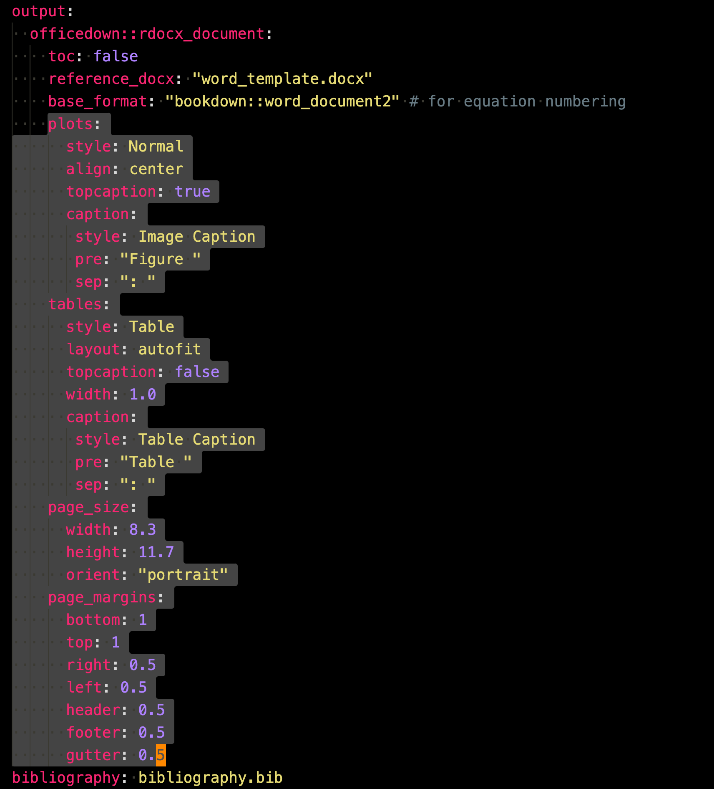
Tip
For the complete set of options, see Section 4 of the Officeverse book.
7.6.2 Change styles through reference docx
It is almost always the case that the above approach is not sufficient to format your WORD file to the specific requirements of your target journal. In such a case, you can define the style of the output WORD file in detail using a style reference WORD file. This method can control virtually every aspect of WORD file styling. Some of the commonly customized elements among others are
- font size
- font family
- line spacing
To do this, you first create a style reference word file that follows the style and format you would like the output WORD file to have. Then, add the following to the YAML header under output: like below.
output:
reference_docx: word-style.docxIn our example project, word_template.docx is the reference file.
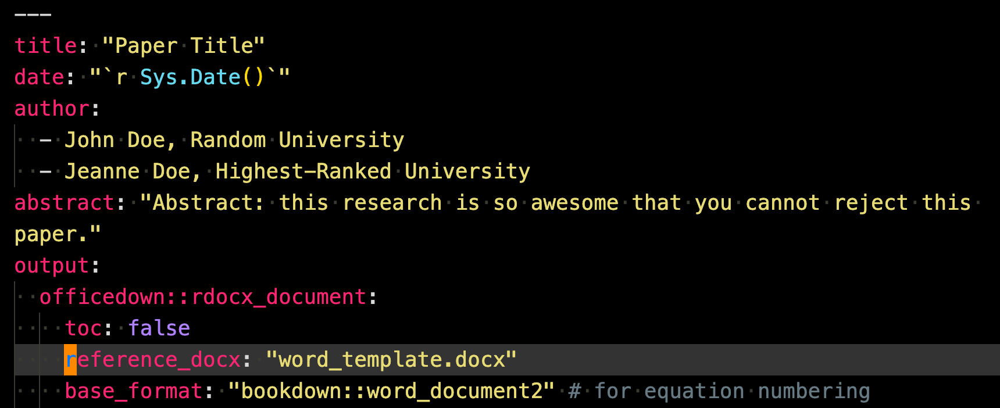
Of course, only the style and format of the reference WORD file will be inherited to the output WORD file, but not its contents.
Note
- Compared the style of sample_to_word.docx and “word_template.docx” and confirm they have the same font size and family for the narrative, sections, subsections, and subsubsection.
- Uncomment
reference_docx: word_template.docxin the YAML header, knit to a WORD file, and check the style of sample_to_word.dcox again
You can change the style of the reference WORD style file and save the changes. Then, the style changes will be reflected in the output WORD file when the rmd file is knitted next time.
Tip
To create a style file for your liking you may find this Microsoft tutorial and this book chapter in (xie2020r?) useful.
7.6.3 Style change example
This section gives you a quick look at what it may look to be changing the style of a reference WORD file. We use word_template.docx for this demonstration. First, open the document on WORD and open the Styles Pane (If you are using Mac, it should be at the right upper corner of the document). Then you should see something like below.

Then, put your cursor on anywhere in line 2 as below and you should see that the current style is changed to “1 Heading 1”, which is the name of the class (style type) the texts in line 2 belong to.
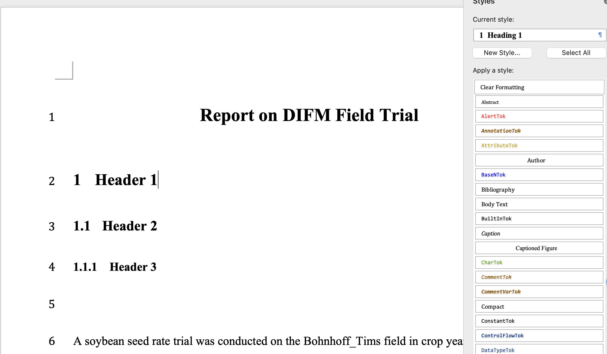
Now, put your cursor at the black triangle and you should see available options including “Modify Style…”
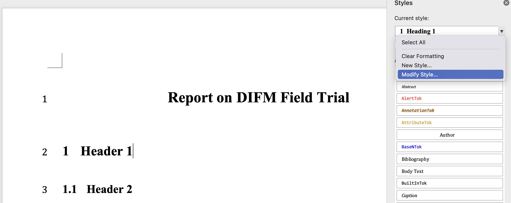
Once you click on it, you should see a pop-up window like below.
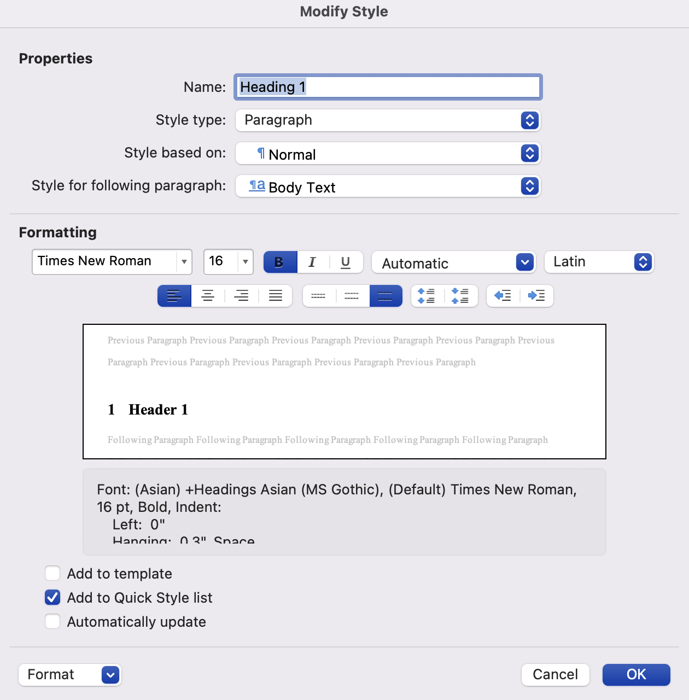
Here, you can change font family, font size, among other things. In this demonstration, let’s get rid of automatic section number. To do so, click on the “Format” button at the lower left corner of the window. Then, you should see this.
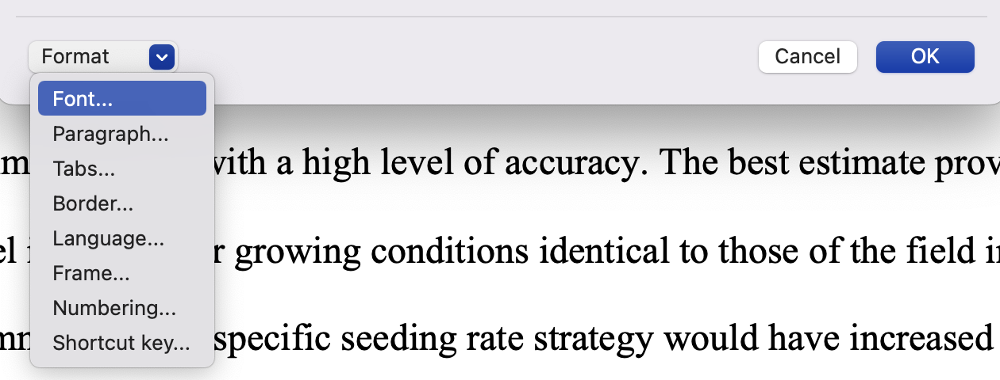
Pick “Numbering,” click on “None,” and hit “OK.”

Hit “OK” again in the previous pop-up window, then you should see this.
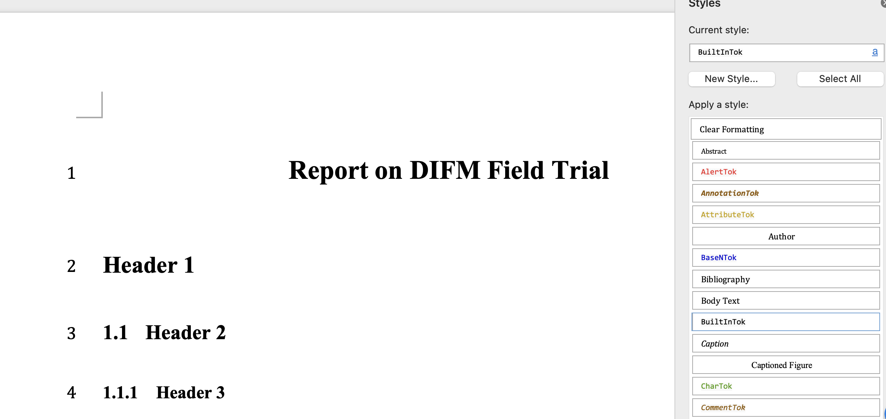
Notice that section numbering is now gone. Now, knit the sample rmd file and confirm that the output WORD file indeed lost section numbers (subsection numbers still remain because you did not modify that part in the reference docx.).
7.7 Citations and References
7.7.1 Set up
First, create a reference file. Then, add the following to the YAML header (not under output:).
bibliography: bibliography file nameThere are various bibliography systems that can be used including BibLaTeX/BibTex (.bib), CSL-JSON (.json), EndNote (.enl) among other.
Then, add the following to the part of rmd where you want to put references.
::: {#refs}
:::In our example, we use a bib file and the bibliography file is named bibliography.bib and specified in the YAML header as below

Note
- See the sample rmd file to see how bibliography file is specified in the YAML header
- Confirm that
{#refs}enclosed by:::is placed in the Reference section of the sample rmd file and confirm that references are indeed added in the Reference section of the output word file
7.7.2 Cite and create references
To cite, use the following syntax:
@reference_nameto print “author names (year)” in the output WORD file[@reference_name]to print “(author names, year)” in the output WORD file[@reference_name_1; @reference_name_2]to print “(author names, year; author names, year)” in the output WORD file[-@reference_name]to print just year
reference_name is the very first entry of a .bib file as in

If you are using CSL json file, then it is the id of an entry as in
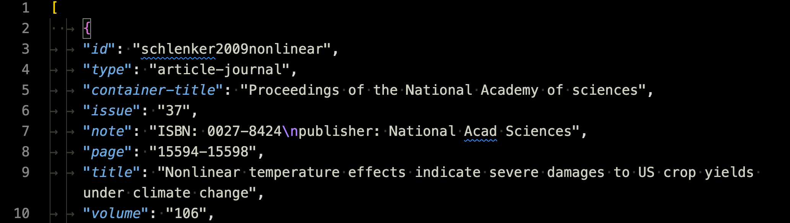
The cited items are automatically added to the reference following the specified style (see the next section).
Note
- See the Introduction and Reference sections in the sample rmd and WORD files to confirm this rule.
- Comment out
bibliography: bibliography.biband uncommentbibliography: bibliography.json, knit again, and check citations and references are still there. This is just an illustration of using a different bibliography file (CSL-json file).
7.7.3 Citation and Reference Style
You can change the citation and reference style using Citation Style Language. Citation style files have .csl extension.
Obtain the csl file you would like to use from the Zotero citation style repository.
Place the following in the YAML header (not under output:):
csl: csl file name - Then, when knitted, citations and references styles reflect the style specified by the csl file
Currently, the csl style should be set to qje.csl (citation style language for The Quarterly Journal of Economics) as below

Citation and references styles in the output WORD file follows the rules for the QJE.

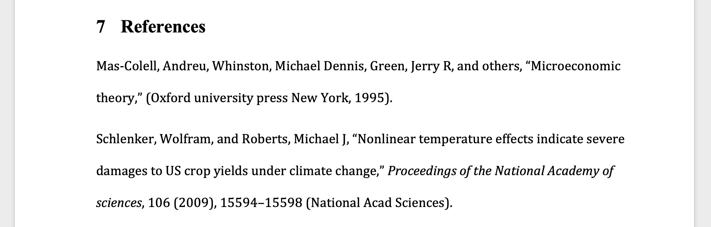
Now, comment csl: qje.csl and uncomment csl: pnas.csl so that the CSL for the Proceedings of the National Academy of Sciences (PNAS) is used, and then knit the sample rmd file.
You can now see that the citation style no longer respects the rules I mentioned above and also the reference style follows that of PNAS. This is because PNAS uses only numbers, but not author names or years.

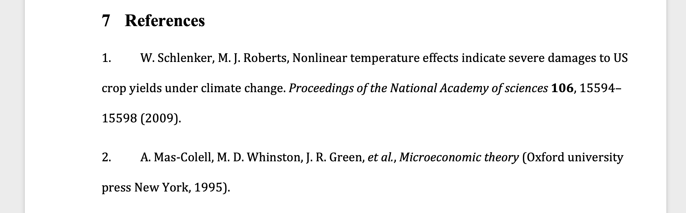
7.8 Tables (Cross-referenced)
Create a table using the
flextablepackage (this is not the only option, and will be discussed later)Add an R code chunk like this:
```{r, tab.id = "table-id", tab.cap = "table-name"}
table_ft
```table_ftis aflextableobject.table-nameis the caption of the table in the output WORD filetable-idis the table id you can use to cross-reference
- Use
\@ref(tab:table-id)in the Rmarkdown file to cross-reference the table (table numbering in the output WORD file is automatic)
Important
You cannot use _ in the table id (- is allowed). Cross-referencing would not work if the table id includes _.
Note
- See the Tables section of the sample rmd for the R codes to create a table using the
flextablepackage and confirm that the table appears in the output WORD files - See the bottom of the Data subsection under the Materials and Methods section to confirm that cross-referencing is working.
7.8.1 Packages to create tables
One of the disadvantages of writing to a WORD file is that some table-making R packages are not compatible with it. The flextable package is written by the same author of the officedown package, which we are using to write to a WORD file. So, naturally, a table object created by the flextable package (a flextable object) can be knitted into the output WORD without (almost) any hiccups as we saw earlier. A notable R package that does NOT work well with the output class of officedown::rdocx_document (which we are using) is the gt package. Tables created by the package is an object of class gt. Unfortunately, there is no function that lets you convert an gt object to a flextable object as of now.
One of the recommended packages is the modelsummary package (especially for those who often include regression results tables and summary statistics tables). It lets you create regression results tables via the modelsummary() function and summary statistics tables via the datasummary() function1. Both functions has an option called output and you can use output = "flextable" to generate tables as flextable objects, which can then be included in the output file easily.
Here are some example R codes of using the modelsummary package to create a regression results and summary statistics tables.
Regression table
#--- regressions ---#
lm_1 <- fixest::feols(mpg ~ hp + cyl, data = mtcars)
lm_2 <- fixest::feols(mpg ~ hp + cyl + wt, data = mtcars)
lm_3 <- fixest::feols(mpg ~ hp + cyl + wt, cluster = ~ vs, data = mtcars)
#--- create a regression results table ---#
modelsummary::modelsummary(
list(lm_1, lm_2, lm_3),
output = "flextable",
gof_omit = "IC|Log|Adj|F|Pseudo|Within"
) %>%
autofit() %>%
hline(8) # add horizontal line. modelsummary() adds horizontal line separating coefficient estimates and model summary statistics. But, it disappears on WORD for some reason. So, it is manually added here.Summary statistics table
modelsummary::datasummary(
mpg + hp + cyl ~ Mean + SD,
data = mtcars,
output = "flextable"
)Here is one of the resources to learn how to use the flextable package if you need to further modify the tables created by the modelsummary() and datasummary() functions.
Note
See how the exactly the same codes above in the sample rmd file translates into the regression results and summary statistics tables in the output word file.
7.9 Figures (Cross-referenced)
7.9.1 Figures created internally
You can create plots within an Rmarkdown file and display them in the output WORD file. Here are the steps.
Create a plot using R
Add an R code chunk like this:
figure_gis a plot.fig.cap = "caption"addscaptionas the caption of the figurefigure-idis the figure id used for cross-referencing
```{r, fig.id = "figure-id", fig.cap = "caption"}
figure_g
```- Use
\@ref(fig:figure-id)in the Rmarkdown file to cross-reference the figure (figure numbering in the output WORD file is automatic)
Important
- Please do not forget to have
fig.cap = "caption"in the R code chunk option that output a plot. Otherwise, the plot will not be recognized as a plot in the output WORD file and cross-referencing will not work even though the plot will be displayed (check to confirm this by removingfig.cap = "The Distribution of Yield by Zone"from the R code chunk in the Figures section of the sample WORD file). - You cannot use
_in the figure id (-is allowed). Cross-referencing would not work if the table id includes_.
You can control the size of the plots in the output WORD file, using the fig.width and fig.height options in the R code chunk. For example, fig.width = 4 would mean that the width of the plot will be 4 inches. Use the dpi option to control the resolution of the plot. The higher the dpi value, the sharper the plot is.
Try
- Change
fig.widthto 2 and see what happens to the output WORD file. - Remove the
fig.capoption and see what happens to the output WORD file. - Change the
dpivalue to 100 see what happens to the output WORD file.
7.9.2 Importing pre-made figures
Instead of creating plots using R code inside an Rmarkdown, we often need to import figures that were made elsewhere. You may be importing your company/university logos. You may have created plots using the ggplot2 package and saved them as pictures. In order to import a pre-made figure and cross-reference it, you can use knitr::include_graphics() as follows,
```{r echo = F, fig.id = "figure-id", fig.cap = "figure caption"}
knitr::include_graphics("file name")
```You can cross-reference imported figures in the same manner as the R-generated figures as shown above.
Rmarkdown-WORD Comparison: Visual Example


It is important to note that pdf files are not accepted2. One of the accepted files types is .png (or jpg)3. So, if you are creating figures outside of the Rmarkdown file, save it as a png file.
In order to change the size of the imported figure, you can use the same R chunk option of fig.width and fig.height as the internally created plots. However, you cannot control the resolution of the imported figure using dpi (naturally) because the resolution of the saved image will be respected. If you are using R to create a plot, you can set its dpi when saving it. For example, if you are using ggplot2, you can the dpi option in ggsave() will do the job.
Try!
- Change
fig.width = 3to see its effect on the output WORD file - Change
dpi = 600in the R code chunk for the second figure to confirm that it does not anything
7.10 Mathematical equations
You can use Latex-like math syntax to write mathematical equations. For equation numbering and cross-referencing to work as discussed here, make sure that you use bookdown::word_document2 for the base_format in the YAML header as below.
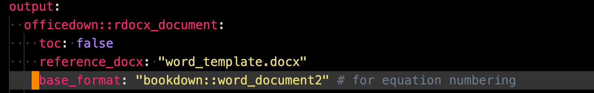
7.10.1 Math equation
Math for WORD output is much more limited compared to writing to a PDF file using Latex (when knitting to a PDF file, Rmarkdown uses Latex to render math equations). This is because Latex is NOT involved in converting Latex-like math syntax to math equations when knitted to WORD. Instead, pandoc is doing the conversion job. So, it is not surprising that not all the Latex math capabilities can be utilized when knitting to a WORD file. With that said, most of the syntaxes that you will need are the same between Rmd-to-WORD and Latex. You can use the equation (for single line of math) and align (more than equal to one equations) environments with successful cross-referencing.
equation environment
To use an equation environment, first write math and then put (\#eq:equation-id) at the end (but before \end{equation}) to give an equation id to the equation. You can use \@ref(eq:equation-id) to cross-reference the equation.
\begin{equation}
Math
(\#eq:equation-id)
\end{equation}For example,
\begin{equation}
\bar{y} = \sum_{i=1}^n y_i
(\#eq:eq-1)
\end{equation}should print like below in the output WORD file.
\[ \begin{equation} \bar{y} = \sum_{i=1}^n y_i \end{equation} \]
align environment
This works just like equation environment. To use an align environment, first write line(s) of math and then put (\#eq:equation-id) at the end (but before \end{align}) to give an equation id to the equation. You can use \@ref(eq:equation-id) to cross-reference the equation.
\begin{align}
Math\\
Math
(\#eq:equation-id)
\end{align}For example,
\begin{align}
AR(p): Y_i &= c + \epsilon_i + \phi_i Y_{i-1} \dots \\
Y_{i} &= c + \phi_i Y_{i-1} \dots
\end{align}should print like below in the output WORD file.
\[ \begin{align} AR(p): Y_i &= c + \epsilon_i + \phi_i Y_{i-1} \dots \\ Y_{i} &= c + \phi_i Y_{i-1} \dots \end{align} \]
Rmarkdown-WORD Comparison: Visual Example


7.10.2 In-line math
To write a mathematical expression in line, you can enclose math expressions by $ like below.
Our model is written as $Y_z = f_z(S) + g_z(N) + h_z(X,Y) + \varepsilon_z$.This should appear like below in the output WORD file.
Our model is written as \(Y_z = f_z(S) + g_z(N) + h_z(X,Y) + \varepsilon_z\).
Rmarkdown-WORD Comparison: Visual Example